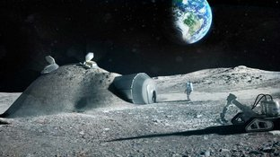
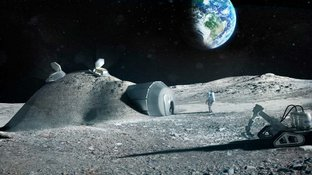

Así serán las casas para habitar la luna
Un estudio de arquitectura ya tiene un posible diseño de las viviendas para hacer posible la existencia humana en el satélite.
Un estudio de arquitectura ya tiene un posible diseño de las viviendas para hacer posible la existencia humana en el satélite.
